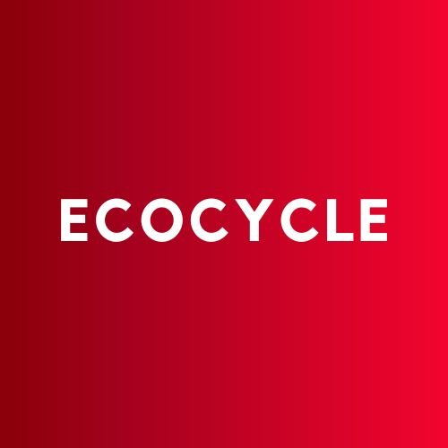
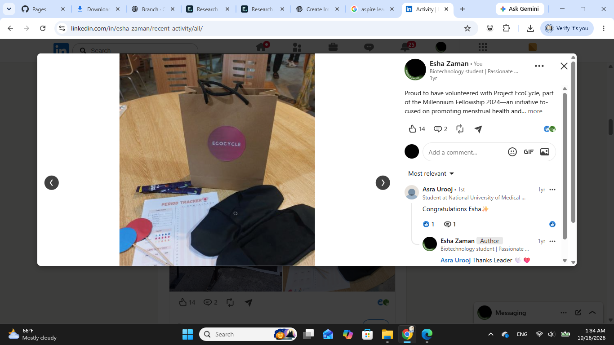
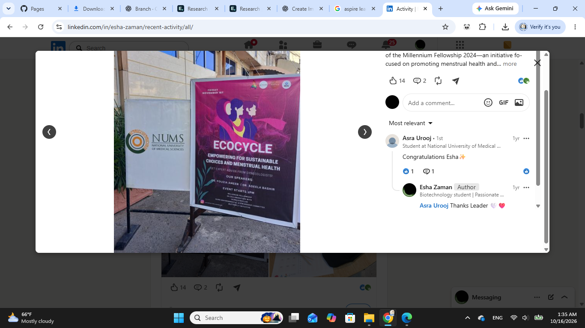

Destigmatizing menstruation
Questions on awareness, social attitudes and barriers to discussing menstruation in Pakistani society.
A collaborative initiative connecting menstrual-health awareness with thoughtful, sustainable product choices.

I contributed as a volunteer to menstrual-health awareness and reusable menstrual-product activities, including educational materials and community engagement.
The project addressed menstrual stigma and access to practical information, while exploring reusable cloth pads and responsible disposal choices.
Follow EcoCycle ↗
Two questionnaires explored attitudes towards menstruation and experiences with menstrual products.
Questions on awareness, social attitudes and barriers to discussing menstruation in Pakistani society.
Questions on sanitary-pad use, everyday concerns and opinions about reusable or organic alternatives.

Educational materials and reusable-product activities brought the project’s focus into a practical setting, alongside conversations about menstrual health and sustainability.
For academic discussions, prospective graduate supervision and research-related conversations.